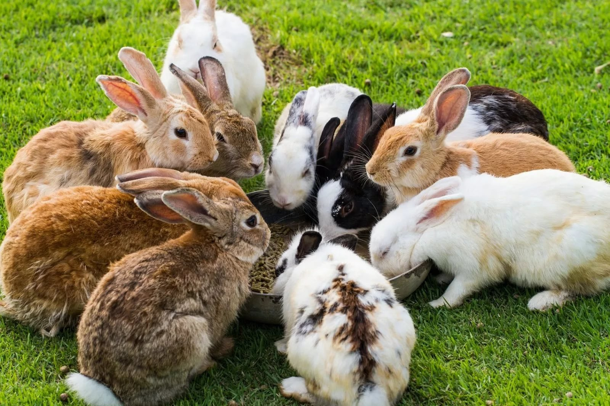

|
Породы кроликов:
|
Виды кроликов Кролики обладают полными, овальными телами. Их уши достигают длины более 10 см, возможно, являются адаптацией к обнаружению хищников, также для охлаждения тела. Размеры и вес кролика колеблются от 20 см в длину и 0,4 кг веса до 50 см и веса более 2 кг. |